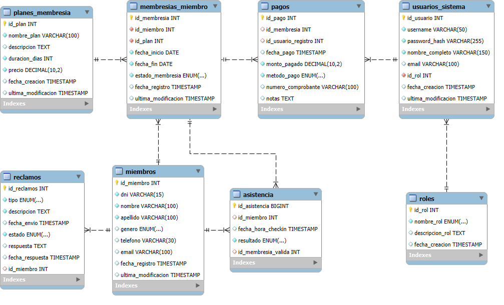
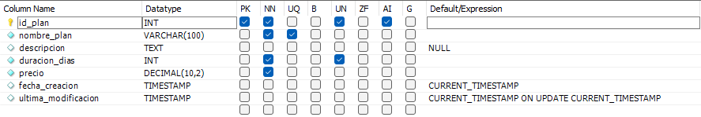
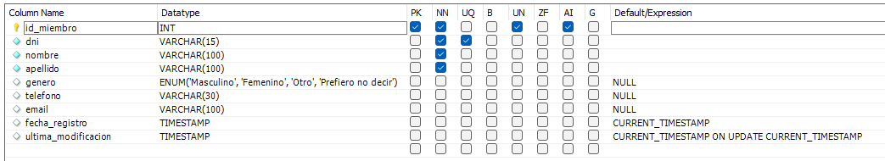
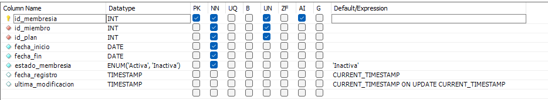
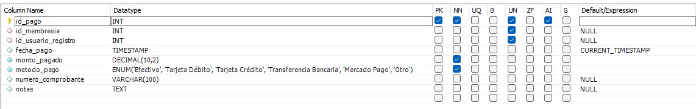
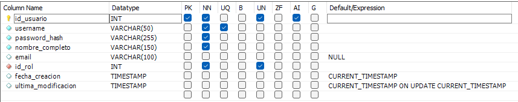
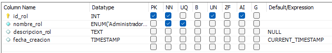
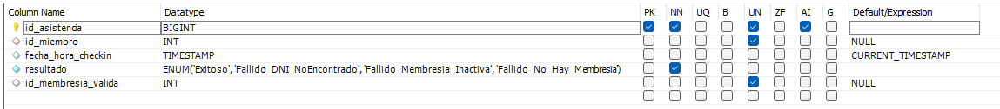
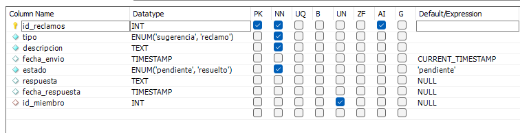

Base de datos
- Para la base de Datos se utilizo MySql Server y MySql Workbench. Ambos en la version 8.0.42.
- Descarga la base de datos aquí 👉 goatym.sql
Diagrama Entidad Relación

Relaciones
- Cada plan puede ser la base para 0 o muchas membresías. Cada membresía debe estar asociada a un único plan.
- Cada miembro puede tener 0 o muchas membresías. Cada membresía pertenece a un miembro.
- Cada membresía puede tener 0 o muchos pagos asociados (renovaciones). Cada pago puede estar vinculado a una membresía o a ninguna (si la membresía fue eliminada).
- Cada pago es registrado por un usuario del sistema o no (en caso de ser borrado). Cada usuario del sistema puede registrar 0 o muchos pagos.
- Cada usuario del sistema le corresponde un rol (administrador o recepcionista). Cada rol puede tener asociado 0 o muchos usuarios del sistema.
- Cada miembro puede generar 0 o muchos registros de asistencias. Cada intento de asistencia puede estar vinculado a un miembro o ninguno (en caso de que se ingrese incorrectamente un DNI)
- Cada membresía puede validar 0 o muchos intentos de asistencia. Cada intento de asistencia puede estar vinculado a una membresía que permitió el acceso o no (en caso de que este vencida o no exista).
- Cada miembro puede realizar 0 o muchos reclamos. Cada reclamo puede estar asociado a un miembro o ninguno (en caso de reclamos anónimos).
Tablas y sus Características:
- Tabla
planes_membresia- Descripción: Define los tipos de suscripciones o planes que ofrece el gimnasio.
- 
- Campos Clave:
id_plan(INT UNSIGNED, NOT NULL, AUTO_INCREMENT): Llave primaria. Identificador único para cada plan.nombre_plan(VARCHAR(100), NOT NULL): Llave única. Nombre descriptivo del plan.
- Restricciones de Llave Foránea: No posee llaves foráneas directas, pero es referenciada por la tabla
membresias_miembro.
- Tabla
miembros- Descripción: Contiene la información de los clientes del gimnasio.
- 
- Campos Clave:
id_miembro(INT UNSIGNED, NOT NULL, AUTO_INCREMENT): Llave primaria. Identificador único para cada miembro.dni(VARCHAR(15), NOT NULL): Llave única. Documento Nacional de Identidad del miembro.
- Restricciones de Llave Foránea: No posee llaves foráneas directas, pero es referenciada por las tablas
asistencia,membresias_miembroyreclamos.
- Tabla
membresias_miembro- Descripción: Almacena las instancias de suscripción de los miembros a los diferentes planes ofrecidos.
- 
- Campos Clave:
id_membresia(INT UNSIGNED, NOT NULL, AUTO_INCREMENT): Llave primaria. Identificador único para cada membresía de un miembro.id_miembro(INT UNSIGNED, NOT NULL): Llave foránea. Referencia al miembro al que pertenece la membresía.id_plan(INT UNSIGNED, NOT NULL): Llave foránea. Referencia al plan de membresía contratado.
- Restricciones de Llave Foránea:
fk_membresia_miembro:id_miembroreferencia aid_miembroen la tablamiembros.- ON DELETE RESTRICT: Impide la eliminación de un miembro si tiene membresías asociadas.
- ON UPDATE CASCADE: Si se actualiza el
id_miembroen la tablamiembros, se actualizará correspondientemente en esta tabla.
fk_membresia_plan:id_planreferencia aid_planen la tablaplanes_membresia.- ON DELETE RESTRICT: Impide la eliminación de un plan si hay membresías de miembros asociadas a él.
- ON UPDATE CASCADE: Si se actualiza el
id_planen la tablaplanes_membresia, se actualizará correspondientemente en esta tabla.
- Tabla
pagos- Descripción: Registra las transacciones económicas realizadas por los miembros.
- 
- Campos Clave:
id_pago(INT UNSIGNED, NOT NULL, AUTO_INCREMENT): Llave primaria. Identificador único para cada pago.id_membresia(INT UNSIGNED): Llave foránea. Membresía específica que se está pagando o renovando.id_usuario_registro(INT UNSIGNED): Llave foránea opcional. Usuario del sistema que registró el pago.
- Restricciones de Llave Foránea:
fk_pago_membresia:id_membresiareferencia aid_membresiaen la tablamembresias_miembro.- ON DELETE SET NULL: Si se elimina la membresía referenciada, el valor de
id_membresiaen esta tabla se establecerá en NULL. - ON UPDATE CASCADE: Si se actualiza el
id_membresiaen la tablamembresias_miembro, se actualizará correspondientemente en esta tabla.
- ON DELETE SET NULL: Si se elimina la membresía referenciada, el valor de
fk_pago_usuario:id_usuario_registroreferencia aid_usuarioen la tablausuarios_sistema.- ON DELETE SET NULL: Si se elimina el usuario del sistema referenciado, el valor de
id_usuario_registroen esta tabla se establecerá en NULL. - ON UPDATE CASCADE: Si se actualiza el
id_usuarioen la tablausuarios_sistema, se actualizará correspondientemente en esta tabla.
- ON DELETE SET NULL: Si se elimina el usuario del sistema referenciado, el valor de
- Tabla
usuarios_sistema- Descripción: Contiene la información de los usuarios (personal del gimnasio) que operan el sistema.
- 
- Campos Clave:
id_usuario(INT UNSIGNED, NOT NULL, AUTO_INCREMENT): Llave primaria. Identificador único para cada usuario del sistema.username(VARCHAR(50), NOT NULL): Llave única. Nombre de usuario para el login.id_rol(INT UNSIGNED, NOT NULL): Llave foránea. Rol del usuario en el sistema.
- Restricciones de Llave Foránea:
fk_usuario_rol:id_rolreferencia aid_rolen la tablaroles.- ON DELETE RESTRICT: Impide la eliminación de un rol si hay usuarios del sistema asociados a él.
- ON UPDATE CASCADE: Si se actualiza el
id_rolen la tablaroles, se actualizará correspondientemente en esta tabla.
- Tabla
roles- Descripción: Define los roles de los usuarios que pueden operar el sistema (ej: Administrador, Recepcionista).
- 
- Campos Clave:
id_rol(INT UNSIGNED, NOT NULL, AUTO_INCREMENT): Llave primaria. Identificador único para cada rol.nombre_rol(ENUM('Administrador','Recepcionista'), NOT NULL): Llave única. Nombre del rol.
- Restricciones de Llave Foránea: No posee llaves foráneas directas, pero es referenciada por la tabla
usuarios_sistema.
- Tabla
asistencia- Descripción: Registra los intentos de ingreso (check-ins) de los miembros al gimnasio.
- 
- Campos Clave:
id_asistencia(BIGINT UNSIGNED, NOT NULL, AUTO_INCREMENT): Llave primaria. Identificador único para cada registro de asistencia.id_miembro(INT UNSIGNED): Llave foránea. Referencia al miembro que realizó el check-in.id_membresia_valida(INT UNSIGNED): Llave foránea opcional. ID de la membresía que permitió el acceso exitoso.
- Restricciones de Llave Foránea:
fk_asistencia_membresia_valida:id_membresia_validareferencia aid_membresiaen la tablamembresias_miembro.- ON DELETE SET NULL: Si se elimina la membresía referenciada, el valor de
id_membresia_validaen esta tabla se establecerá en NULL. - ON UPDATE CASCADE: Si se actualiza el
id_membresiaen la tablamembresias_miembro, se actualizará correspondientemente en esta tabla.
- ON DELETE SET NULL: Si se elimina la membresía referenciada, el valor de
fk_asistencia_miembro:id_miembroreferencia aid_miembroen la tablamiembros.- ON DELETE CASCADE: Si se elimina el miembro referenciado, se eliminarán también sus registros de asistencia.
- ON UPDATE CASCADE: Si se actualiza el
id_miembroen la tablamiembros, se actualizará correspondientemente en esta tabla.
- Tabla
reclamos- Descripción: Almacena las sugerencias y reclamos realizados por los miembros.
- 
- Campos Clave:
id_reclamos(INT, NOT NULL, AUTO_INCREMENT): Llave primaria. Identificador único para cada reclamo o sugerencia.id_miembro(INT UNSIGNED): Llave foránea opcional. Miembro que realizó el reclamo o sugerencia.
- Restricciones de Llave Foránea:
fk_reclamos_miembros1:id_miembroreferencia aid_miembroen la tablamiembros.- ON DELETE SET NULL: Si se elimina el miembro referenciado, el valor de
id_miembroen esta tabla se establecerá en NULL. - ON UPDATE CASCADE: Si se actualiza el
id_miembroen la tablamiembros, se actualizará correspondientemente en esta tabla.
- ON DELETE SET NULL: Si se elimina el miembro referenciado, el valor de
Adicionalmente, la base de datos cuenta con varias vistas (vista_asistencia, vista_membresias, vista_pagos, vista_reclamos, vista_usuarios) que simplifican consultas comunes al predefinir uniones entre tablas y seleccionar campos específicos.